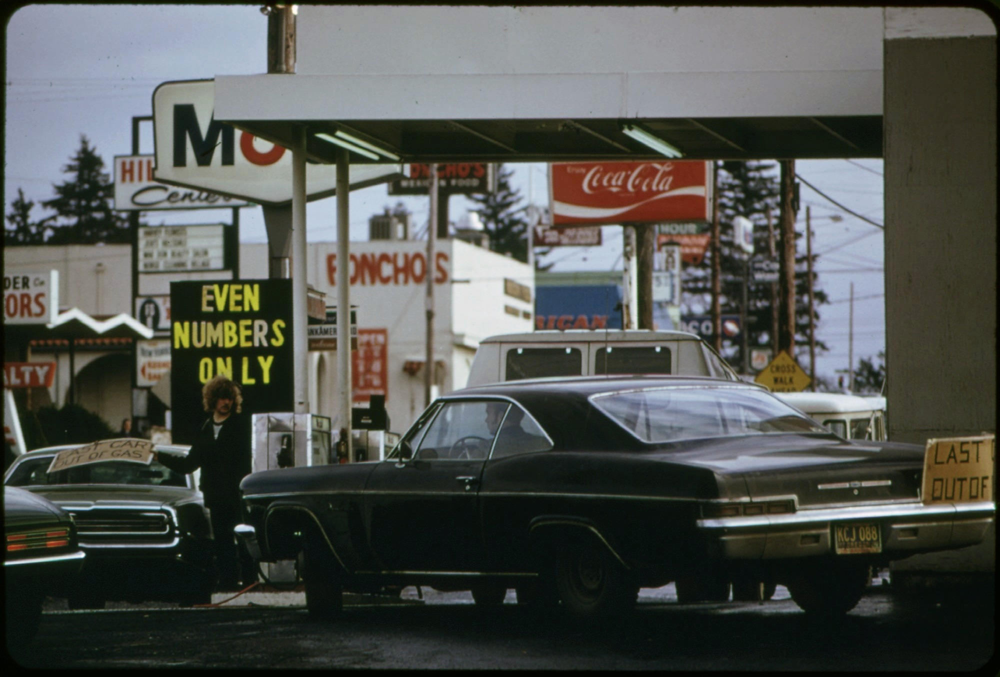
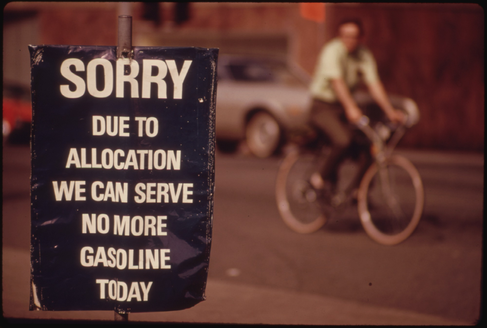

Oktober 1973. Di Amerika Serikat, antrean mobil mengular di depan SPBU. Sebagian kehabisan bensin sebelum gilirannya tiba. Di ruang-ruang rapat Washington, para pejabat menyadari sesuatu yang belum pernah mereka pikirkan sebelumnya: negara adidaya itu ternyata bisa dilumpuhkan — bukan oleh rudal, melainkan oleh keran minyak yang ditutup dari ribuan kilometer jauhnya.

Pemicunya: Perang Yom Kippur
Semua berawal pada 6 Oktober 1973, ketika Mesir dan Suriah melancarkan serangan mendadak ke Israel — bertepatan dengan hari raya Yom Kippur. Tujuannya merebut kembali wilayah yang hilang dalam Perang Enam Hari 1967. Perang Yom Kippur pun meletus.
Amerika Serikat terang-terangan memihak Israel. Presiden Richard Nixon menyetujui paket bantuan militer senilai US$2,2 miliar — termasuk operasi angkut udara raksasa bernama Operation Nickel Grass. Bagi negara-negara Arab, ini keterlaluan. Dukungan militer sebesar itu, di tengah perang yang masih berkecamuk, dianggap sebagai keberpihakan yang tak bisa ditoleransi.
Dan mereka punya satu kartu yang belum pernah dimainkan: minyak. Saat itu Timur Tengah memasok sekitar 36% produksi minyak dunia — posisi tawar yang luar biasa.
16 Oktober: Harga Dinaikkan 70%
Pada 16 Oktober 1973, negara-negara OPEC mengumumkan kenaikan harga patokan minyak sebesar 70% — dari sekitar US$3 menjadi US$5,11 per barel. Itu baru pemanasan.
Sehari kemudian, 17 Oktober 1973, para menteri perminyakan Arab yang tergabung dalam OAPEC (Organisasi Negara-Negara Arab Pengekspor Minyak) — dipimpin Raja Faisal dari Arab Saudi — mengumumkan langkah yang mengguncang dunia: embargo total ekspor minyak ke negara-negara pendukung Israel, disertai pemotongan produksi 5% per bulan sampai tuntutan politik mereka dipenuhi.
Anatomi Senjata: Cara Kerja Embargo
Embargo 1973 bukan sekadar "tidak jualan". Ia dirancang sebagai senjata presisi:
Pertama, selektif. Targetnya bukan semua pembeli, melainkan negara-negara pendukung Israel: Amerika Serikat, Inggris, Belanda, Jepang, dan Kanada — kemudian diperluas ke Portugal, Rhodesia, dan Afrika Selatan. Negara yang dianggap netral lolos dari daftar. Pesannya jelas: pilih kubu, atau pilih minyak.
Kedua, bertahap dan menekan. Produksi dipotong 5% setiap bulan — bukan sekaligus. Ini perang urat saraf: setiap bulan pasar bertanya-tanya, bulan depan masih dapat pasokan atau tidak? Kepanikan justru melipatgandakan efeknya.
Ketiga, skalanya sistemik. Embargo menciptakan defisit pasokan sekitar 4,5 juta barel per hari di pasar dunia. Angka yang terlihat kecil — hanya sekitar 4% pasokan global — tetapi cukup untuk memicu kepanikan massal. Harga tidak naik karena kelangkaan fisik semata, melainkan karena ketakutan.
Pada 19 Oktober, setelah Nixon mengumumkan bantuan militernya, Arab Saudi menghentikan total pengiriman ke AS. Pada Maret 1974, ketika embargo akhirnya dicabut, harga minyak dunia sudah bertengger di US$12 per barel — naik hampir 300%, empat kali lipat dari sebelum krisis.
Yang menarik: embargo dicabut, tapi harganya tidak pernah turun kembali. Dunia sudah memasuki era baru.
Pertama kali dalam sejarah, minyak dipakai sebagai senjata perang. Tanpa satu tembakan pun, satu keputusan melumpuhkan ekonomi negara-negara industri.
Peta Korban: Siapa Kena Paling Parah?
Dampak embargo tidak merata — tergantung seberapa dalam ketergantungan tiap negara pada minyak Arab:
Amerika Serikat kena telak. Harga bensin melonjak dari sekitar 38 sen menjadi 55 sen per galon — naik hampir 45% dalam setahun. Presiden Nixon tampil di televisi mengimbau penghematan: batas kecepatan diturunkan, bensin dijatah, bahkan waktu musim panas diperpanjang sepanjang tahun demi menghemat energi.
Inggris sampai memberlakukan three-day workweek — industri hanya boleh beroperasi tiga hari seminggu untuk menghemat listrik. Sejumlah negara Eropa melarang berkendara di hari Minggu.
Jepang paling rentan: tiga perempat kebutuhan energinya bergantung pada minyak impor, dan 77%-nya berasal dari Teluk. Ekonomi yang sedang melesat tiba-tiba diingatkan bahwa fondasinya bisa dicabut dari luar.
Kombinasi resesi dan inflasi tinggi yang menyusul kemudian dikenal sebagai stagflasi — mimpi buruk para ekonom: ekonomi lesu, tapi harga-harga naik.

Amerika Membalas dengan Sistem
Yang membedakan negara kuat dari negara panik adalah responsnya. Amerika tidak hanya mengutuk embargo — ia membangun sistem agar tak terulang:
Pada Desember 1975, Presiden Gerald Ford menandatangani Energy Policy and Conservation Act yang membentuk Strategic Petroleum Reserve (SPR) — cadangan minyak raksasa milik negara yang disimpan di gua-gua garam bawah tanah Louisiana dan Texas. Tujuannya satu: meredam guncangan pasokan di masa depan. SPR kemudian menjadi cadangan minyak strategis terbesar di dunia.
Bersamaan dengan itu, AS bersama 31 negara mendirikan International Energy Agency (IEA) — konsorsium negara konsumen minyak dengan misi respons darurat kolektif, termasuk kewajiban tiap anggota memegang cadangan darurat setara 90 hari impor bersih.
Pelajaran pertamanya: krisis diubah menjadi institusi. Bukan sekadar bertahan dari guncangan — tapi membangun tameng permanen.
Cermin Indonesia: Kita Malah Panen
Nah, ini bagian yang jarang diceritakan. Di tengah dunia yang panik, Indonesia justru kecipratan rezeki.
Indonesia sudah menjadi anggota OPEC sejak 1962 (era Presiden Soekarno) — tetapi embargo 1973 dilakukan oleh OAPEC, yang anggotanya negara-negara Arab. Indonesia tidak ikut embargo. Namun karena harga dunia naik empat kali lipat, Indonesia ikut menikmati lonjakan harga: inilah awal oil boom 1970-an.
Devisa dari minyak dan gas menjadi sumber dana utama pembangunan Indonesia sepanjang 1970-an hingga awal 1980-an. Dengan skema bagi hasil (production sharing), bagian pemerintah mencapai 85% — angka yang luar biasa besar. Uang minyak itulah yang membiayai pembangunan infrastruktur, sekolah, dan industrialisasi awal Orde Baru.
Sisi Gelap: Dari Raja Minyak Jadi Pembeli
Tapi rezeki nomplok punya sisi gelap: ia bikin lupa diri. Oil boom membuat Indonesia kecanduan satu komoditas. Ketika harga minyak jatuh pada 1980-an, fondasi ekonomi yang dibangun di atasnya ikut goyang.
Pelan tapi pasti, kurvanya berbalik: produksi minyak turun karena ladang-ladang tua menua dan investasi seret, sementara konsumsi dalam negeri terus naik. Pada 2003, Indonesia resmi menjadi net oil importer — impor lebih besar dari ekspor. Lima tahun kemudian, pada 2008, Indonesia keluar dari OPEC. Mantan presiden SBY sendiri mengakui: mindset "kita kaya minyak" sudah tidak relevan ketika Indonesia menjadi net importir.
Dari raja minyak menjadi pembeli — dalam satu generasi. Inilah harga dari ketergantungan komoditas.
Analisis: Dibaca Pakai Lensa Ketahanan Nasional
Di sinilah 1973 berhenti menjadi sekadar cerita sejarah dan berubah menjadi pelajaran strategi. Dibaca dengan lensa ketahanan nasional, ada empat pelajaran yang tak lekang:
1. Ketahanan energi adalah ketahanan nasional. Embargo 1973 membuktikan: negara yang pasokan energinya dikendalikan pihak lain sedang menggadaikan kedaulatannya. Energi bukan urusan teknis Kementerian ESDM semata — ia adalah pilar keamanan negara, setara dengan pertahanan militer.
2. Ketergantungan adalah kerentanan yang bisa dipersenjatai. AS dan Eropa tidak "salah" memakai minyak Arab — mereka salah karena tidak punya rencana cadangan. Setiap ketergantungan tunggal (satu pemasok, satu komoditas, satu rute) adalah titik tekan yang tinggal menunggu dimanfaatkan lawan.
3. Respons yang benar adalah membangun sistem, bukan sekadar bertahan. SPR dan IEA adalah jawaban institusional: cadangan strategis, diversifikasi pasokan, dan koordinasi kolektif. Negara yang hanya bereaksi terhadap krisis akan terus menjadi korban krisis berikutnya.
4. Jangan mabuk komoditas — diversifikasi atau jadi korban siklus. Kisah Indonesia adalah peringatan dua arah: oil boom mendanai pembangunan, tetapi ketergantungan pada satu komoditas membuat ekonomi rapuh saat siklus berbalik. Pelajaran yang sama berlaku untuk setiap boom komoditas sesudahnya.
Seperti dirumuskan dalam sebuah kajian Lemhannas RI: sejak 1973, "minyak tidak lagi sekadar komoditas perdagangan biasa, namun sudah bisa dimanfaatkan sebagai senjata yang bersifat strategis."
Warisan 1973: Pola yang Terus Berulang
1973 hanyalah yang pertama. Polanya berulang: 1979 (Revolusi Iran), 1990 (Perang Teluk), 2022 (energi sebagai senjata dalam konflik Rusia-Ukraina). Senjatanya sama, pemainnya ganti, arenanya melebar dari minyak ke gas hingga mineral kritis.
Lima dekade berlalu, pelajaran 1973 masih hidup. Setiap kali Timur Tengah bergejolak, harga minyak dunia — dan harga bensin di pom dekat rumah lo — ikut bergerak. Energi tetap menjadi senjata geopolitik.
Itulah kenapa kisah 1973 bukan sekadar sejarah. Ia adalah cetak biru cara dunia bekerja: siapa menguasai sumber daya, ia memegang kuasa. Jejak kuasa — persis seperti nama akun ini.
Arsip & Referensi
Semua klaim angka dan linimasa di artikel ini diverifikasi silang dari sumber-sumber berikut:
- National Geographic Indonesia — "Krisis Minyak 1973, Sejarah Dunia Gempar Akibat Perang Arab-Israel".
- Validnews — "Terjebak Booming Minyak" (data harga dari BP Statistical Review of World Energy; wawancara pengamat migas Umar Said).
- Perpustakaan Lemhannas RI — analisis minyak sebagai senjata strategis.
- Hati Pena — "Minyak dan Tahta Zaman: Ketika Dunia Digerakkan oleh Hitamnya Energi" (Indonesia & OPEC 1962).
- Wikipedia — "1973 oil crisis" (linimasa & angka, diverifikasi silang dengan sumber di atas).
- TBS News — "How does the current global oil crisis compare with the 1973 oil embargo?" (data dampak: harga bensin AS, three-day week Inggris, ketergantungan Jepang).
- US Department of Energy — "How the Strategic Petroleum Reserve Helps Oil Refiners Weather the Storm" (sejarah SPR, dibentuk 1975).
- Repositori UPN Veteran Yogyakarta — "Latar Belakang Indonesia Keluar dari Keanggotaan OPEC Tahun 2008" (net importir sejak 2003, keluar OPEC 2008).
Kredit foto arsip: antrean SPBU Oregon & papan "kehabisan bensin" — US National Archives (DOCUMERICA/US EPA), public domain; potret Raja Faisal — Saudi Press Agency via Wikimedia Commons, public domain.
Suka bedah kayak gini? Versi ringkasnya ada di Instagram & TikTok @jejakkuasa — follow biar nggak ketinggalan titik balik berikutnya.
Next: kenapa Selat Hormuz bisa bikin harga bensin naik. Satu selat, dunia taruhan.